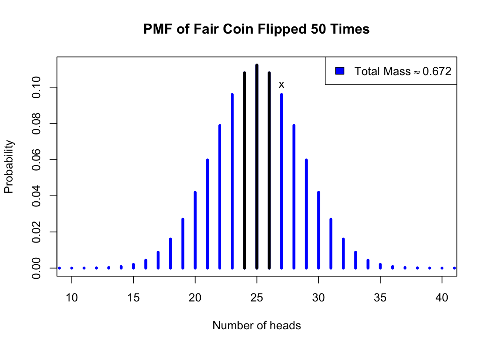
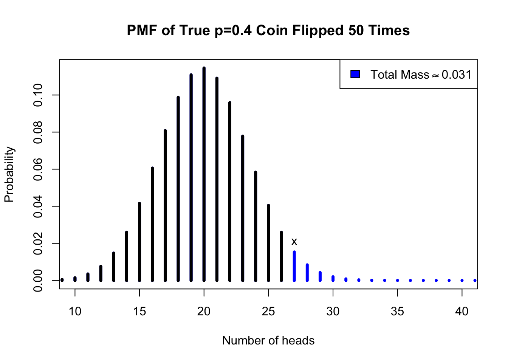

Maximum likelihood estimation computes the best guess for the true location of an unknown parameter, but unfortunately these guesses are almost never correct, and guesses for the same parameter usually fluctuate by small amounts from sample to sample. Put another way, each sample usually misleads us by a little bit — even carefully gathered samples which meet all our assumptions. Therefore, we should not only learn methods of identifying the best estimate for a parameter, but methods for identifying whether a specific estimate is reasonable, or indeed, methods which help us to identify all reasonable estimates for the parameter.
Two-tailed hypothesis tests
We will first consider the case of asking whether one specific estimate could be a reasonable guess for the true parameter(s).
Consider again the coin data from before: 27 heads and 23 tails from 50 trials. Maximum likelihood estimation would say that the best guess for the true probability of heads would be the sample average, 54%. But I believe that if you had a real coin in your hands, and you flipped it 50 times and observed 27 heads, you would not say to yourself, “Surely, this coin must slightly favor heads.” You probably assumed it was a fair 50-50 coin before you flipped it, and you probably didn’t change your mind after you flipped it. Intuitively, we know that even fair coins produce unfair sample averages.1 Yes, it’s true that an unfair 55-45 coin might often produce 27 heads from 50 trials. But so would a fair 50-50 coin, and so our data do not rule out the possibility of a fair coin.
We can even compute the exact probability that a fair 50-50 coin would create results like our data. When I say “like our data”, I will include all results that are as far-from-fair as our data, or even farther-from-fair. I want to show you that fair coins can not only produce our exact data, but can sometimes produce even stranger results.2 These extreme results would include 27 heads (like our data), but also 28, 29, …, up to 50 heads. They also include 23 heads, since 23 heads (and 27 tails) from 50 flips of a fair coin would be just as unusual as 23 tails (and 27 heads). Likewise, 22 heads, 21, …, down to 0 heads. If we assume that the number of heads is binomially distributed, we can write:
So you can see that perfectly fair coins will behave at least as “unfairly” as our data more than two times out of three!3
Code
#coin hypothesis testplot(0:50,dbinom(0:50,50,0.5),type='h',lwd=4,xlim=c(10,40),main='PMF of Fair Coin Flipped 50 Times',col='blue',xlab='Number of heads',ylab='Probability')points(24:26,dbinom(24:26,50,0.5),type='h',lwd=4)text(27,dbinom(27,50,0.5),'x',pos=3)legend(x='topright',legend=expression('Total Mass'%~~%0.672),fill='blue')

Figure 2.1: Two-tailed hypothesis test on the coin data, assuming a fair coin
The chain of reasoning we just followed is known as a hypothesis test. Above, you can see a figure which illustrates the same logic through a graph: the probability mass function (PMF) of a binomial variable where \(N=50\) and \(p=0.5\). This corresponds to our calculation of how the heads and tails will be distributed, under our assumption that the coin is fair. The maroon-colored lines are the probabilities for every outcome as extreme as our data (27 heads, marked ‘x’), or more extreme than our data. They sum to 0.672.
In truth, I did not strictly follow the steps of a formal hypothesis test, which I present below:
Let \(X\) be a random variable from a distribution but with one or more unknown parameters \(\theta\), and let \(\boldsymbol{x}\) be data sampled from \(X\). To perform a two-tailed hypothesis test, perform the following steps:
Define the null hypothesis, \(H_0: \theta = \theta_0\)
Define the alternative hypothesis, \(H_1: \theta \ne \theta_0\)
Determine a significance threshold\(\alpha\) which represents the maximum acceptable risk of falsely rejecting the null hypothesis in cases where it was actually true
Derive a test statistic\(T=f(\cdot | \theta_0)\), a function of the sample which has a known probability distribution when the null hypothesis is true, and calculate \(t_\boldsymbol{x}=f(\boldsymbol{x}|\theta_0)\)
Compute the p-value of the test, which is the probability of observing a test statistic at least as extreme as observed in \(\boldsymbol{x}\) — typically, \(P(T \gt t_\boldsymbol{x})\) or \(P(T \lt t_\boldsymbol{x})\)
If the p-value is less than or equal to \(\alpha\) then reject \(H_0\), since the data make it too unlikely; otherwise, we do not have enough evidence to reject \(H_0\)
Each of these steps involve many nuanced considerations, more than can be easily expressed in this short document. For the moment, I might simply say that hypothesis testing is incredibly misunderstood and misused throughout not just the broader scientific community (including data science), but even within the statistical community, which you might presume to know better. What I have presented here is a woefully incomplete tale, but we all must start somewhere. With those caveats, allow me a few further remarks:
Sometimes we choose a null hypothesis \(H_0\) which we genuinely wish to evaluate as a possible truth about the world. Other times we choose a “straw man” null hypothesis which we do not seriously believe, in order to establish a more realistic alternative. These two cases are both legitimate avenues for scientific inquiry.
Notice that the alternative hypothesis will frequently be a composite hypothesis, containing an infinitude of possibilities. Therefore, we only say that we “reject the null hypothesis”, never that we “accept the alternative hypothesis” — there are many alternative hypotheses, and some of them are even less likely to be true than our null hypothesis. We have done nothing to identify the ‘right’ alternative hypothesis, we have only ruled out the null hypothesis.
The significance threshold should be chosen before calculating your p-value, or else all this scientific rigor evaporates, leaving us with nothing more than a gut check. The most common significance threshold is \(\alpha = 0.05\), but it’s best practice to choose a threshold that is actually appropriate to the context of your problem. I have often used thresholds as low as \(\alpha = 0.001\) and as high as \(\alpha = 0.2\) in my career.
Consider the costs of wrongly rejecting the null hypothesis very carefully, and weigh them against the costs of wrongly failing to reject the null hypothesis. For example, a diagnostic test for cancer creates very different problems from a false positive versus a false negative.
One-tailed hypothesis tests
The steps listed above document a two-sided hypothesis test, but sometimes we have an asymmetric problem to consider which suggests a one-tailed hypothesis test. As an example, let’s re-use the same coin data (27 heads, 23 tails), but invent a different story: Pretend that you have bought a “trick” coin from a magician, who promises that it lands tails much more often than heads. The magician isn’t sure of the precise probabilities, but guarantees that the coin lands heads no more than 40% of the time. Skeptical of the magician’s claims, you flip the coin 50 times and observe 27 heads. Could the magician be telling the truth? Let’s test this hypothesis through the following steps:
We define the null hypothesis, \(H_0:p \le 0.4\). Notice that unlike the two-sided test, our null hypothesis is now composite, including many different possible truths.
We define the alternative hypothesis, \(H_a:p \gt 0.4\). Just like the two-sided test, our null and alternative hypotheses are exhaustive and mutually exclusive: exactly one of them will always be true.
We set a significance threshold; here I will use the classic \(\alpha=0.05\) since this example is made up and there are no real consequences to being wrong.
We derive a test statistic under the null hypothesis — here, simply the number of heads, which follows the binomial distribution. Our null contains multiple candidates for \(p\), but as the data suggest \(p \gt 0.4\), we will assume \(p=0.4\), since every other parameter choice within the null hypothesis will result in even lower \(p\)-values.
We compute a \(p\)-value, that is, the probability of observing a test statistic at least as extreme as our data:
Since our p-value of 0.031 is less than our significance threshold of 0.05, we reject the null hypothesis and conclude that we were swindled by the magician. We cannot be certain, but we know that “trick” coins like the one described create datasets like our own only 3% of the time.
The figure below illustrates this test, and shows why the two variants are called “two-tailed” and “one-tailed”. Two-tailed test evaluates all possible data samples which are at least as extreme as our actual data — these samples might support parameters less than or greater than \(\theta_0\), and they fall in both the left and right “tails” of the test distribution. One-tailed tests evaluate only one side of those extreme samples:
Code
#coin hypothesis testplot(0:50,dbinom(0:50,50,0.4),type='h',lwd=4,xlim=c(10,40),main='PMF of True p=0.4 Coin Flipped 50 Times',col='blue',xlab='Number of heads',ylab='Probability')points(0:26,dbinom(0:26,50,0.4),type='h',lwd=4)text(27,dbinom(27,50,0.4),'x',pos=3)legend(x='topright',legend=expression('Total Mass'%~~%0.031),fill='blue')

Figure 2.2: One-tailed hypothesis test of the coin data, assuming a trick coin
Visualizer: Poisson estimation
This visualizer shows data generated from a Poisson distribution, which is often used to model the number of events observed in a fixed period. You can set the true rate (lambda) wherever you like, and also set a sample size. For the purpose of this visualization, assume that you are asked if the true rate could be 5, i.e.\(H_0: \lambda = 5\). On the left you can see a plot of your sample, and on the right you can see how often samples that extreme are generated from a true Poisson(\(\lambda\)=5) process. The results of the two-tailed hypothesis test (which may draw the wrong conclusion!) are at the bottom.
#| '!! shinylive warning !!': |
#| shinylive does not work in self-contained HTML documents.
#| Please set `embed-resources: false` in your metadata.
#| standalone: true
#| viewerHeight: 600
library(shiny)
library(bslib)
ui <- page_fluid(
tags$head(tags$style(HTML("body {overflow-x: hidden;}"))),
title = "Hypothesis test for a Poisson sample",
fluidRow(column(width=4,sliderInput("lambda", "True lambda (rate)", min=3, max=7, value=5, step=0.05)),
column(width=4,sliderInput("nsamp", "N (sample size)", min=10, max=500, value=50)),
column(width=4,sliderInput("alpha", "Alpha", min=0.01, max=0.2, value=0.05))),
fluidRow(column(width=6,plotOutput("distPlot1")),
column(width=6,plotOutput("distPlot2"))),
fluidRow(column(width=12,textOutput("textString1"))))
server <- function(input, output) {
x <- reactive({rpois(n=input$nsamp,lambda=input$lambda)})
y <- reactive({input$nsamp*dpois(0:max(x()),5)})
z <- reactive({(0:2714)[dpois(0:2714,5*input$nsamp)>1e-6]})
w <- reactive({(0:2714)[dpois(0:2714,5*input$nsamp)<=dpois(sum(x()),5*input$nsamp)]})
text1 <- reactive({if (sum(dpois(0:2714,5*input$nsamp)[dpois(0:2714,5*input$nsamp)<=dpois(sum(x()),5*input$nsamp)])<=input$alpha) 'we *reject*' else 'we *cannot* reject'})
output$distPlot1 <- renderPlot({plot(table(x()),main='Histogram of Data',xlab='Number of events',ylab='Frequency'); points(0:max(x()),y(),col='#0000ff'); legend(x='topright',legend=expression(paste('Expected if ', lambda == 5)),col='#0000ff',pch=1)})
output$distPlot2 <- renderPlot({plot(z(),dpois(z(),5*length(x())),type='h',main='Distribution Under H0',xlab='Sum of sample',ylab='Probability',lwd=3/log(length(x()),10)); points(w(),dpois(w(),5*length(x())),type='h',col='#0000ff',lwd=3/log(length(x()),10))})
output$textString1 <- renderText({paste('Under H0, data as extreme as our sample are observed ', round(100*sum(dpois(w(),5*length(x()))),1), '% of the time. Since alpha=', input$alpha, text1(), ' the null hypothesis that lambda=5.')})
}
shinyApp(ui = ui, server = server)
If you disagree, I wonder what you think would happen if we flipped a fair coin five times…↩︎
This reasoning is very important for continuous distributions, where we may never observe the same data twice. But it also applies to discrete distributions: when we have many observations, the probability of any specific sequence of data can be very, very small.↩︎
The formula above makes use of the ‘combination’ operator, familiar to some readers but perhaps not others. In short, \(({\scriptstyle \begin{array}{cc} N \\ k \end{array}}) = N!/(N-k)!k!\), with “!” representing the factorial symbol, whereby \(k! = k \cdot (k-1) \cdot \ldots \cdot 2 \cdot 1\). The classic use case of combinations is to count the ways of selecting unordered sets of \(k\) objects from \(N\) total possibilities.↩︎